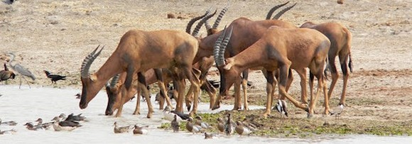

Categorie(s):
savane,
stepe
parc waza
Le parc de Waza a initialement été créé en 1934 avant de devenir officiellement un parc national à la fin des années soixante. Grand de 170.000 ha, c'est la plus célèbre réserve animalière du Cameroun. Le parc abrite un grand nombre d’espèces : éléphants, lions, girafes, cobs de buffon, gazelles, hippopotames... et de nombreux oiseaux : autruches, pélicans, hérons, marabouts... Le parc dispose de pistes convenablement entrenues, un véhicule 4x4 est cependant recommandé. Des guets surélevés, accessibles en voiture, ont été aménagés près des points d'eau et offrent de belles vues d'ensembles. Visitez le parc très tôt le matin et en fin de journée, en dehors des grosses chaleurs de midi où même les animaux restent abrités. Le parc est accessible quasiment toute l'année; la meileure période est cependant la saison sèche (janvier à mai). Plus la saison sèche avance, plus les animaux se concentrent autour des points d'eau non asséchés. La visite se fait obligatoirement avec un pisteur qui saura vous orienter et vous expliquer la faune et la flore. Prévoyez sa place dans votre véhicule! Le parc est à 2 heures de route de Maroua. Un joli campement au confort rudimentaire se trouve à 200 mètres juste en face de l'entrée du Parc. Nous vous recommandons d'y passer une nuit pour pouvoir accéder au parc aux premières heures de la journée. Prévoyez 5.000 francs CFA de droit d'entrée par personne et par jour (tarif non résident) et 5.000 francs CFA pour le pisteur. Il y a également une petite taxe à payer pour les appareils photo et caméras vidéo.
Lors de votre visite, faites preuve de patience. Les animaux sont présents mais se font souvent désirer. C’est au moment ou vous commencez à désespérer que vous verrez surgir devant vous un troupeau d’éléphants ou des lions. Ne cherchez pas à vous aventurer hors des pistes, ce qui est interdit : les animaux se déplacent indifféremment dans la savane et sur les pistes. Vous pourrez très bien en apercevoir à proximité des entrées et ne rien voir en plein centre du parc. Pensez à vous équiper de téléobjectifs ou de jumelles. Prévoir également de quoi lutter contre le soleil et la chaleur très intense en saison sèche. Pour l’hébergement, possibilité de se loger dans les boukarous du campement de Waza situé sur une colline face à l’entrée du parc. Depuis la terrasse du restaurant la vue sur la savane est magnifique. Les boukarous sont rustiques mais permettent un repos réparateur après une journée de voyage. Il y a également un restaurant correct qui peut vous préparer des repas froids pour les safaris. Attention, il est strictement interdit de camper dans le parc qui est fermé à partir de 18H00.
Pour y accéder : Par la nationale 1 soit en provenance de Maroua, via Mora, soit par Kousseri. Attention la route bitumée se dégrade de plus en plus rallongeant d’autant les durées de trajets. Il y a deux entrées pour le parc, l’entrée nord qui est la principale et l’entrée sud très rudimentaire. Privilégier l’entrée nord pour recevoir un maximum de conseils